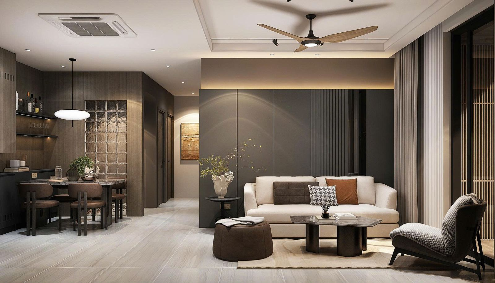
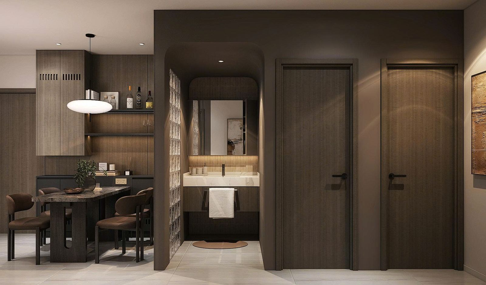
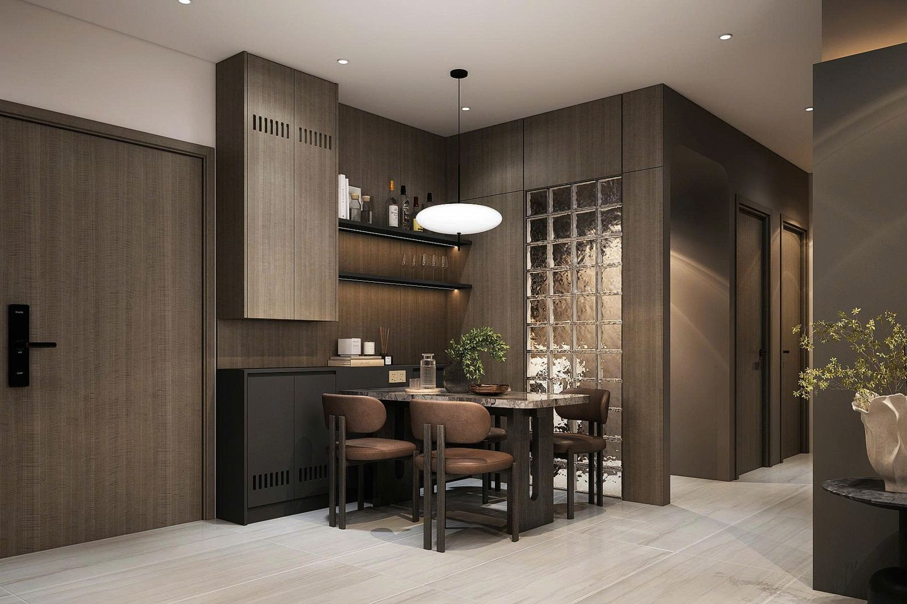
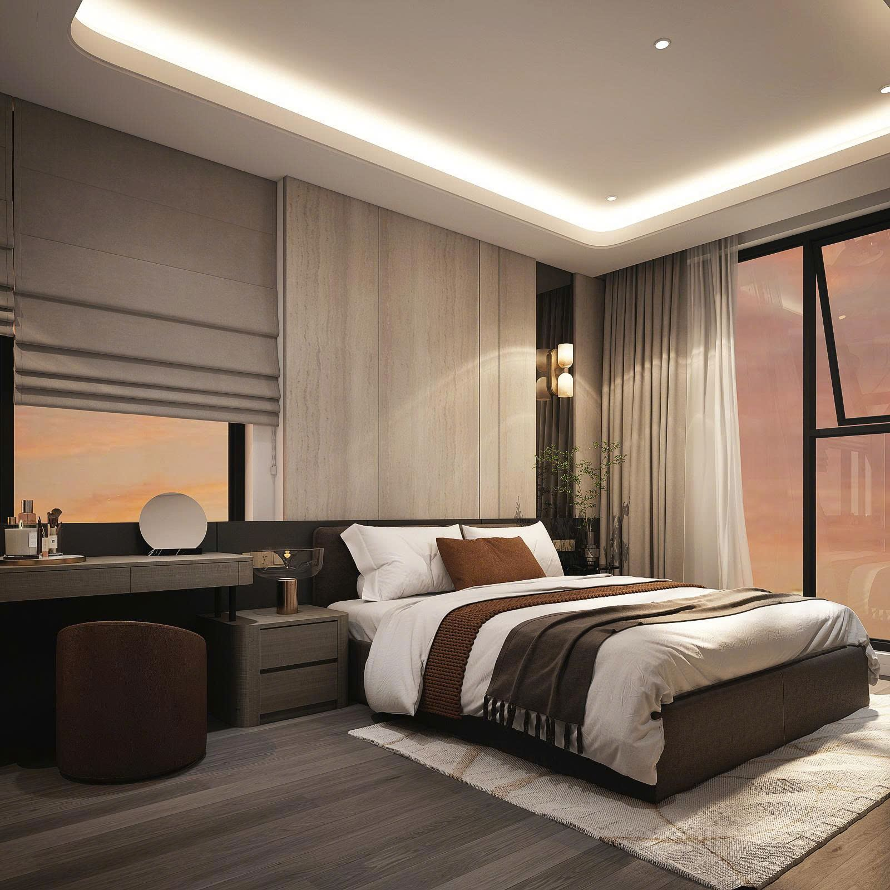
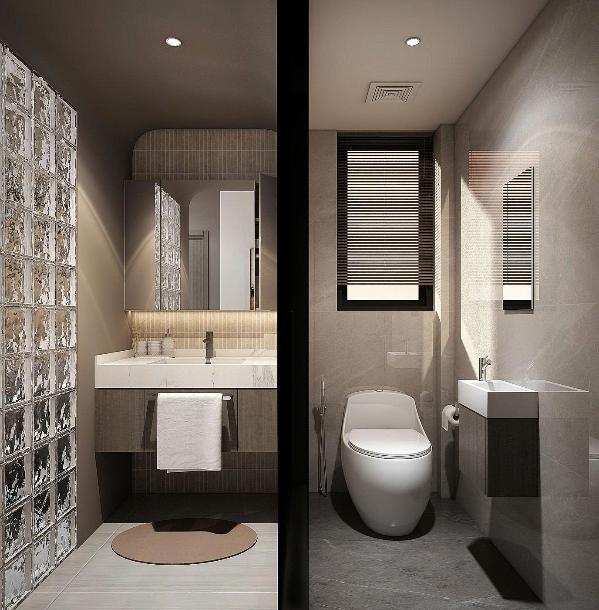
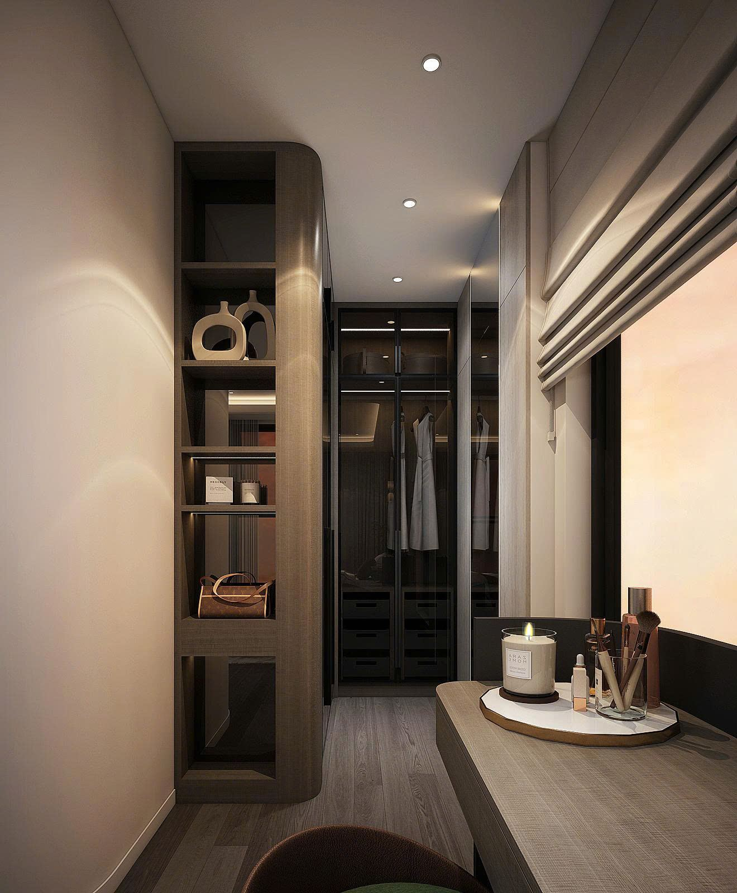

Tổng quan
Cải tạo căn hộ đang có người ở trong tòa nhà khó hơn làm căn thô. Phải phá dỡ mà không ảnh hưởng căn bên cạnh, đi lại đường nước và ống gió nhưng vẫn đấu đúng vào hệ thống chung của tòa nhà.
Báo giá tách riêng phần phá dỡ – cải tạo để chủ nhà thấy rõ chi phí phát sinh do thay đổi bố trí, tách khỏi chi phí hoàn thiện thông thường.
Các hạng mục thi công chính
- Phá dỡ & cải tạo: Phá tường WC cũ và vách hành lang, gom xà bần; đục mở lỗ cửa mới cho phòng tắm và WC (cắt mép, gia cố); bù nền khu WC cũ thành khu khô.
- Đường nước & ống gió: Cắt và đi lại tuyến cấp nước PPR Ø25 từ van tổng tới WC, tắm, lavabo, bếp; đấu nối ống gió quạt hút WC về van chặn lửa (FD) có sẵn của trục kỹ thuật tòa nhà.
- Xây mới: Tường gạch 100 vữa XM M75; vách gạch kính cho khu lavabo và bàn ăn; lanh tô BTCT đúc sẵn cho cửa tắm, WC và phòng ngủ 2.
- Chống thấm & ốp lát: Chống thấm sàn và chân tường cao 0,3 m cho WC và phòng tắm; lát gạch khu chung (khách, ăn, bếp, sảnh); nẹp inox chỗ chuyển tiếp giữa sàn gỗ phòng ngủ và sàn gạch.
- Trần & chiếu sáng: Trần chìm Vĩnh Tường ≈ 61 m²; giật cấp khe hắt LED ≈ 32 md cho phòng khách và 2 phòng ngủ; trần chịu ẩm cho WC; đèn ray nam châm phòng khách; quạt trần có đèn, gia cố móc treo.
- Điều hòa: Máy cassette âm trần 4 hướng thổi LG 2,0 HP cho khu khách – ăn – bếp; 2 máy treo tường 1,5 HP cho phòng ngủ; tuyến ống đồng, bảo ôn và ống nước ngưng đi âm.
Cơ cấu chi phí theo báo giá
Tỷ trọng từng nhóm hạng mục trên tổng giá trị báo giá (chưa VAT):
Hình ảnh phương án





Câu hỏi thường gặp
Cải tạo căn hộ chung cư cần xin phép gì?
Cần đăng ký thi công với ban quản lý tòa nhà, thống nhất giờ làm việc gây ồn, lối vận chuyển xà bần và các điểm đấu nối vào hệ thống chung trước khi phá dỡ.
Dời vị trí WC trong căn hộ có được không?
Có thể, nhưng phải xử lý bù nền, chống thấm lại, đi lại tuyến cấp thoát nước và đấu ống gió quạt hút về đúng van chặn lửa (FD) của trục kỹ thuật.
Chi phí cải tạo khác gì so với hoàn thiện căn thô?
Có thêm phần phá dỡ – cải tạo hiện trạng. Nhật Khang tách riêng phần này trong báo giá để chủ nhà thấy rõ chi phí do thay đổi bố trí.